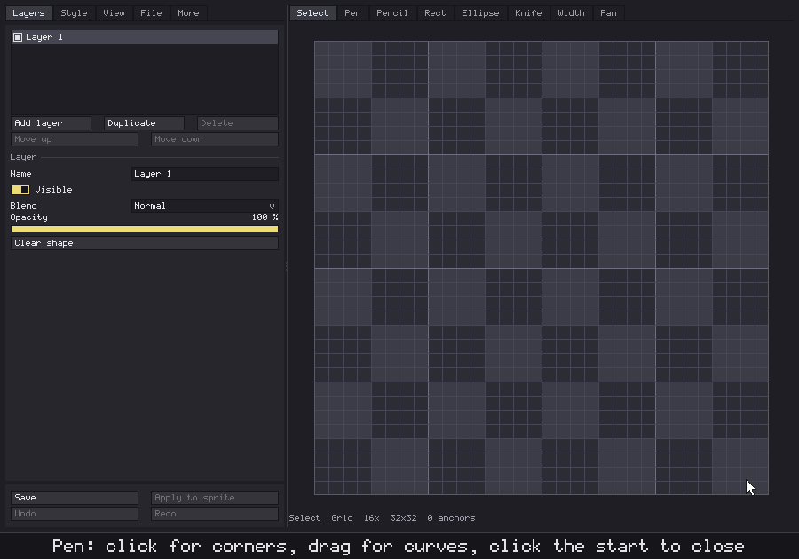
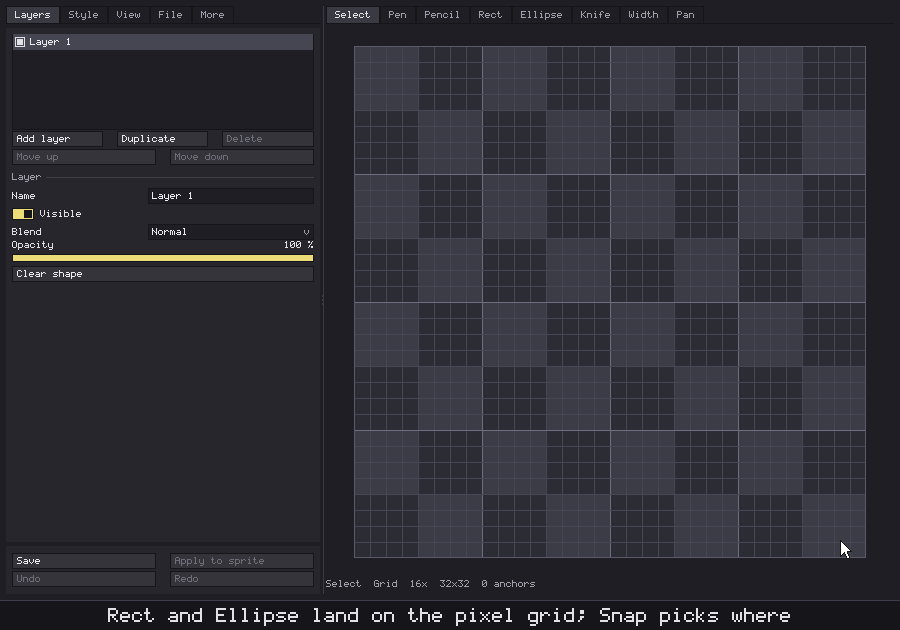
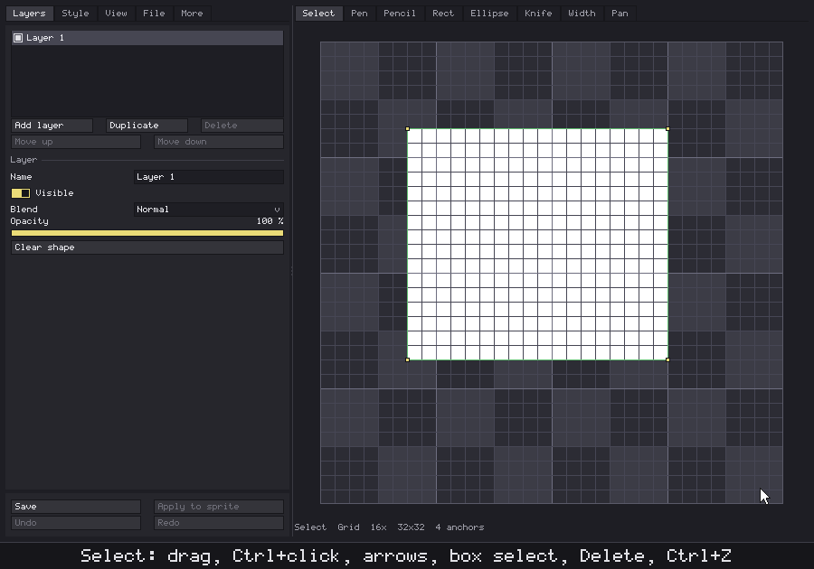
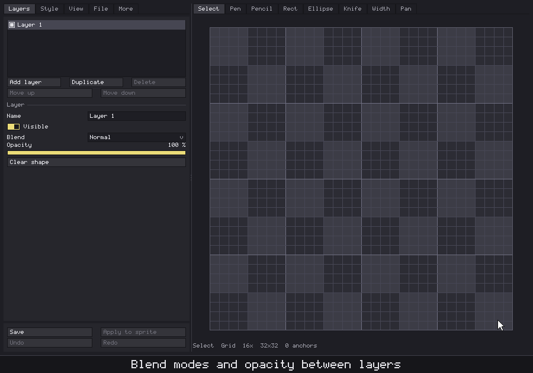
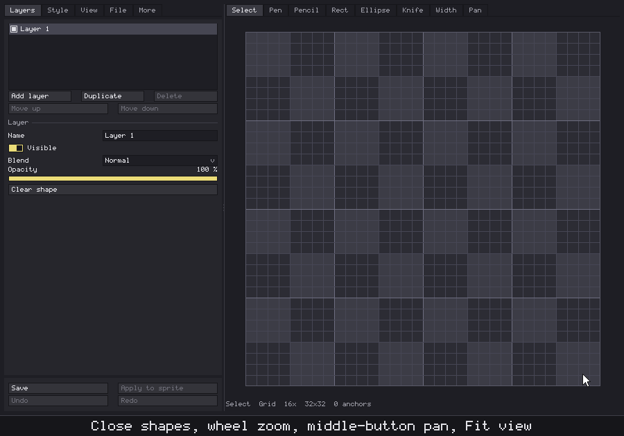

VeSprite is an extension for Aseprite. Changing a curve in pixel art means erasing it and drawing it again. Here you move an anchor and the pixels follow. You draw with bezier tools and get pixels back: on the grid, aliased, with one-pixel outlines walked the way you would walk them by hand. It started as one node of Spaghetti, the one where you draw vector shapes, and it kept asking to be a program.
Pen tool

Click to place corners, drag to pull out a curve, click the first anchor to close. Hold Alt while dragging to break the two handles apart. Esc closes the contour too and goes back to Select. Every click snaps to the pixel grid, so the edges land on whole pixels.
Rect and Ellipse

Drag a box, and hold Shift for a square or a circle. The shape comes out with its anchors selected, ready to move.
- Snap decides where the corners may land: Grid (pixel corners, the default), Half (centres too, what a one-pixel line wants), Anchors or None. It lives on the View tab, and S jumps to the next one.
Select and move

Drag an anchor to move it, drag the outline to move the whole shape. The status line says what a drag will do before you press, which saves a lot of Ctrl+Z.
- Ctrl+click or Shift+click add to the selection. Drag on empty canvas for a box.
- Arrow keys move the selection one image pixel, ten with Shift. Delete removes it.
- Undo is VeSprite's own, one step per gesture: Ctrl+Z, or the Undo button under the panel.
Anchor types

Corner, Smooth or Symmetric from one list on the View tab. Smooth invents handles from the neighbours, Symmetric mirrors them, Corner drops them. C switches between corner and smooth without leaving the canvas.
- Double click any segment to insert an anchor right there, without moving the curve.
- Right click an anchor to remove it.
- Handles show for the selected anchor and its two neighbours only, so a busy shape stays readable.
Layers

Every layer has its own shape, fill, stroke, blend mode and opacity. Only the active one is editable. The others show their pixels and a faint outline to line things up.
- An eye on every row, plus Add layer, Duplicate, Delete, Move up and Move down.
- Double click a row to rename it in place.
Fill and stroke

A stroke of width 1 with the Aliased edge is a Bresenham walk with the elbows cleaned, the line you would draw by hand. Wider than that, the outline is expanded to a filled contour with Butt, Square or Round caps and Miter, Round or Bevel joins.
- Colours open a picker inside the window: RGBA sliders, a hex field and the palette of your sprite as swatches.
- Use foreground and Use background take Aseprite's current colours. Swap colors exchanges fill and stroke.
- Edge switches Aliased and Antialiased for the whole layer.
Gradients that become pixel art

Linear, radial, angular, diamond or reflected. Set the fill's Type to Gradient and two handles appear on the canvas. Drag them.
- Steps is how many bands the ramp is cut into. Dither is how the band edges break up: Bayer 2x2 to 16x16, blue noise, clustered, lines, or none.
- Colors: Stops paints with the stop colours only, so a gradient can be locked to your palette.
- Click the ramp to add a stop, drag a stop to move it, double click it to change its colour.
- The stroke gets a gradient of its own the same way.
- The ramp in the panel shows the bands and the colours, not the dither pattern. That one you see on the canvas.
Blend modes and opacity

Nine blend modes and an opacity slider per layer: Normal, Multiply, Screen, Overlay, Add, Subtract, Darken, Lighten and Difference. The blend applies where the layer overlaps the ones below. Over nothing it shows as itself.
Close shapes, zoom and pan

With Close shapes on, a Pen contour closes itself as soon as it has three anchors and keeps accepting more. A Pencil stroke closes when it ends.
- The wheel zooms about the cursor. The middle button pans from any tool, and so do the Pan tool and Space.
- 0 or F fits the canvas. 1, 2 and 3 zoom to 100, 200 and 300 %.
- The pixel grid shows from 4x. G hides it.
SVG and your sprite
- SVG in: paths, shapes, transforms and arcs. The whole file lands on one new layer.
- SVG out: one path per layer with colours, strokes, opacity, blend and gradients.
- Apply to sprite writes the drawing as a new layer, into the active cel or as a new sprite. Indexed and grayscale sprites get the nearest palette colours.
- Show your sprite behind the drawing as a reference.
- Its own
.vespritefile, and the drawing survives closing the window and closing Aseprite.
Details
- One window inside Aseprite, nothing added to its menus. Tabs and panel on the left, tools and canvas on the right, and a divider you can drag.
- Press
?for the shortcut list. - Eight tools: Select, Pen, Pencil, Rect, Ellipse, Knife, Width and Pan.
- Aseprite 1.3 or newer.
Install
- Download
VeSprite-0.2.0.aseprite-extension. - Double-click it, or in Aseprite: Edit > Preferences > Extensions > Add Extension.
- Open it from File > Scripts > VeSprite.
License
One purchase is for one person, on every computer they use.
- Use it in any project: personal, commercial, client work, games and assets you sell.
- What you draw and export with it is yours. No attribution required.
- Every update in the 0.x and 1.x lines is included.
- You can read and modify the Lua source for your own use.
- Do not share, resell or redistribute the extension. A studio buys one per artist.
Something missing, or something that should work differently? Tell me in the comments.
More Aseprite extensions
- Bonebase: rig, skin and animate pixel art character bases.
- FastFX Full: multi-emitter particle FX, live preview and bake.
- Spaghetti: node-based textures for Aseprite.
- GhostFrames: RIFE frame interpolation for inbetweens.